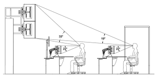

Laudos em Segurança do Trabalho.
.jpg)
É a junção de medidas técnicas, administrativas, médicas e comportamentais a fim de educar na prevenção de acidentes eliminando condições inseguras e perigosas no ambiente de trabalho, tendo como base legal as Normas Regulamentadoras (NR´s), portarias, decretos e leis complementares, determinam as práticas de segurança para cada tipo de empresa.
Os laudos são elaborados por empresa especializada, que analisará as condições de trabalho, determinando as possíveis melhorias a fim de garantir o bem estar e saúde do trabalhador.
PPRA (Programa de Prevenção de Riscos Ambientais)
.jpg)
O PPRA, Programa de Prevenção de Riscos Ambientais, tem por objetivo estabelecer medidas que visem a eliminação, redução ou controle desses riscos em prol da preservação da integridade física e mental do trabalhador. A NR-9 determina a obrigatoriedade de elaboração e implementação do PPRA por todos os empregadores e instituições que admitam trabalhadores como empregados.
LTCAT (Laudo Técnico das Condições do Ambiente de Trabalho)
.jpg)
O LTCAT – Laudo Técnico das Condições do Ambiente de Trabalho é um documento técnico conclusivo e de valor previdenciário, cujo objetivo é analisar as atividades e operações realizadas pelos trabalhadores com exposição a agentes físicos, químicos e biológicos, para determinar se entre elas existem condições que dão direito a percepção da aposentadoria especial. Para esta análise, são seguidas as determinações do Decreto 3.048 de 06/05/1999 e alterações posteriores, além do Anexo IV – Classificação dos Agentes Nocivos e suas alterações dadas pelo Decreto 4032 de 26/11/2001 e a Instrução Normativa INSS Nº 77 de 21.01.2015, atualizada em 13/06/2017.
Prontuário de Instalação Elétrica
.jpg)
O Prontuário de Instalações Elétricas é um sistema organizado de informações pertinentes às instalações elétricas e aos trabalhadores que sintetizará o conjunto de procedimentos, ações, documentações e programas que a empresa mantém ou planeja executar para proteger o trabalhador dos riscos elétricos.
Treinamento NR-10
.jpg)
A Norma Regulamentadora 10 – Segurança em Instalações e Serviços em Eletricidade possui como objetivo regulamentar quanto à segurança dos serviços que de algum modo envolvam a eletricidade. ... A NR 10 deve contribuir com a segurança dos trabalhadores que lidam com eletricidade.
Gestão de Energia
.jpg)
Gestão de energia é uma forma inteligente de reduzir e controlar os custos com energia elétrica em uma empresa, trazendo eficiência energética e aumentando a competitividade do negócio e sua sustentabilidade no mercado.
Um sistema de gestão de energia (SGE), como proposto pela família de normas da ISO 50001, nasce da necessidade de ações contínuas, e a partir da constatação de que mudanças de tecnologia pontuais, sem o devido acompanhamento sistemático das organizações, não garantem a eficiência energética.
Inspeção em PDA (Proteção de descargas Atmosféricas)
.jpg)
A inspeção da Proteção contra Descargas Atmosféricas (PDA) tem o objetivo de garantir que o Sistema de Proteção contra Descargas Atmosféricas (SPDA) e as Medidas de Proteção contra Surtos (MPS) estejam conforme foram projetadas.
É importante que o responsável pela edificação possua uma cópia do projeto original, para que o profissional que fizer a inspeção verifique se o que está instalado naquele momento corresponda ao que foi projetado. Caso exista alguma divergência deve-se verificar o que, porque e quando foi feita esta modificação e se ela deve, ou não, ser mantida.
Laudo de Aterramento Elétrico
.jpg)
O laudo de aterramento avalia as características de segurança do aterramento elétrico existente no empreendimento, através da realização de inspeções, análises e medições ôhmicas, de forma a garantir a segurança dos usuários, visto que o Ministério do Trabalho e Emprego, através de suas Normas Regulamentaras (NR’s), estabelece os parâmetros de segurança relacionados aos diversos tipos de atividades.
Acompanhamento de Perícias
.jpg)
É uma perícia elétrica deve ser feita por um especialista a fim de encontrar problemas relacionados com às instalações elétricas. Como exemplo prático do que acontece na construção civil, os síndicos tem como hábito pesquisar e contratar serviços popularmente conhecimentos como Laudo de Inspeção Elétrica
Laudo de inspeção Elétrica
.jpg)
O laudo deve ser claro para que as pessoas leigas, como os síndico(a)s, possam saber quais melhorias precisam ser feitas na edificação. Ele contempla as áreas de uso coletivo no qual é possível ter acesso durante a inspeção.
As áreas internas de cada apartamento são de responsabilidade dos moradores, não sendo contempladas nesse tipo de laudo, salvo se houver acordo prévio durante a fase de negociação.
Dessa forma, no orçamento é necessário deixar claro o escopo do serviço, considerando a responsabilidade do profissional ao realizar um trabalho dessa natureza.
Além disso, cabe destacar que a inspeção feita no condomínio e a elaboração do laudo está relacionada com uma avaliação feita por amostragem com um critério técnico baseado em referências normativas e legislações municipais, estaduais e federais.
AET (Análise Ergonômica de Trabalho)

Trata-se de um documento essencial na avaliação Quantitativa e Qualitativa dos riscos ergonômicos presentes nas máquinas, equipamentos, postos de trabalho e na execução da atividade profissional.